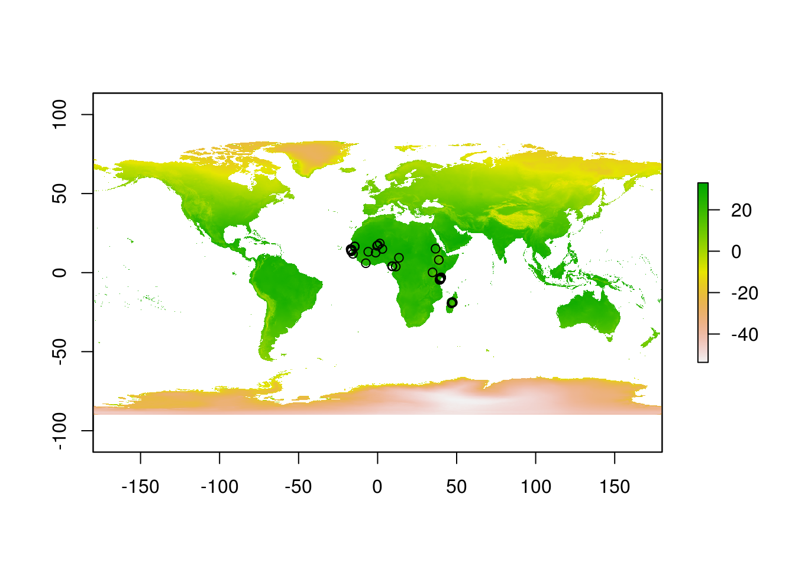
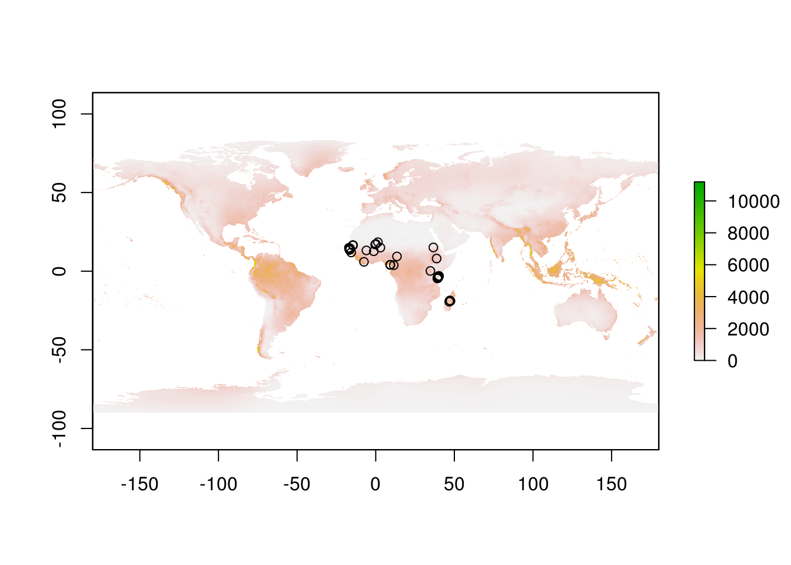
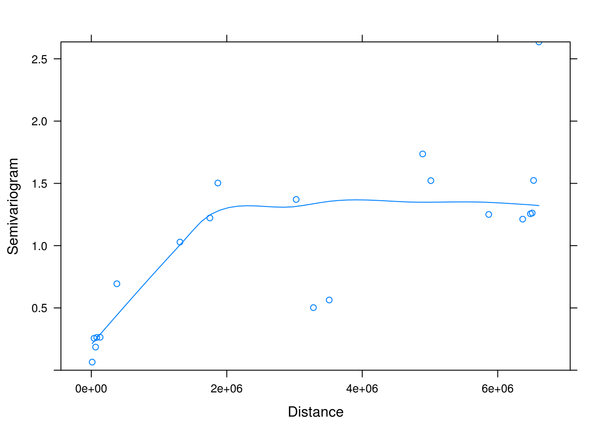
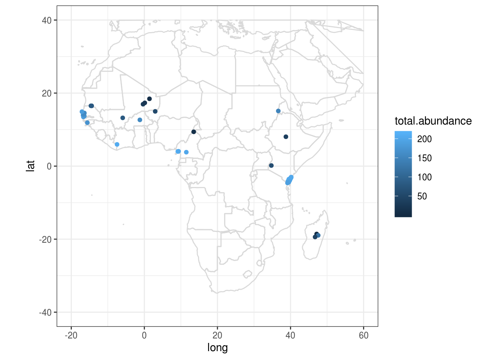
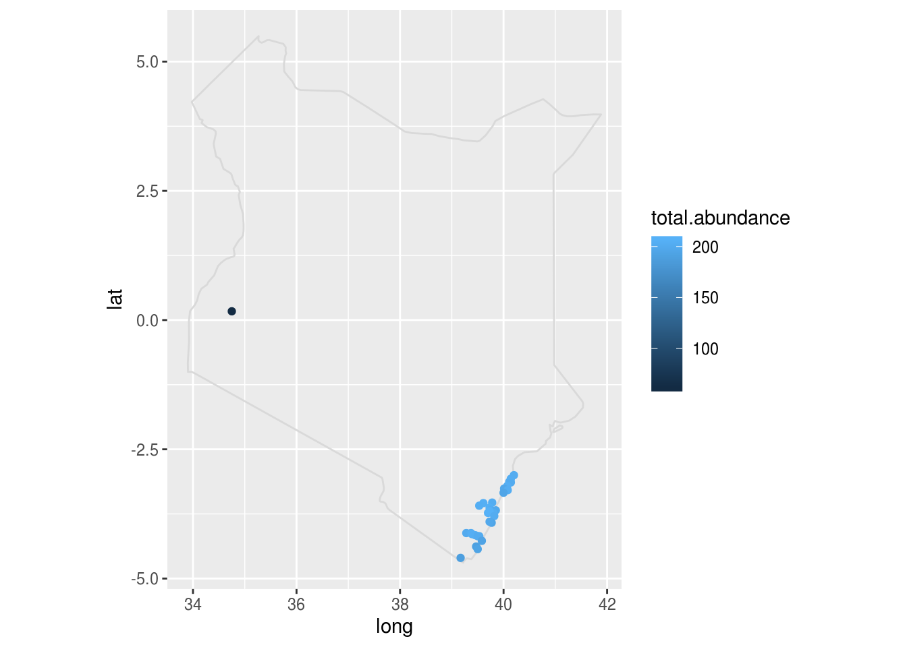

Lesson objectives:
- Understand the basics of spatial data in R
- Learn simple spatial data manipulations
- Fantastic rasters and how to use them
- Incorporate spatial structure in regression models
Lesson outline:
Total lesson time: 1.5 hours
- An introduction to spatial data and objects in R (20 min)
- Plotting and extracting information from rasters (20 min)
- Detecting and modelling spatial dependence (50 min)
- Optional: making simple maps in ggplot (20 min)
Everything in ecology plays out in space. How heterogeneity in abiotic factors across space drive ecological processes (e.g., species interactions) and patterns (e.g., species distributions) has been of interest to ecologists for a long time.
From an implicit perspective, the consideration of space is important to us all. Whenever we have data collected across space, e.g., any sort of field survey, the independence assumption is typically not valid, as sites closer in space will tend to exhibit similar properties. This correlation in space can occur for two reasons (not mutually exclusive):
Spatial autocorrelation may be classified as either positive or negative. A positive correlation means similar values appear together, while a negative case has dissimilar values appearing nearby.
Recall the mixed model lecture. When there is non-independence in regressions that were not properly accounted for, we increase our Type I error (false positive) rates, and risk inferring patterns that don’t in fact exist. Checking for spatial autocorrelation is therefore a crucial step in any regression involving spatial data.
In this lecture, we will continue our quest into vector ecology, only this time asking a much simpler question: what is the effect of mosquito abundance on malaria prevalence? We will explicitly consider the role of space when we answer this question.
Here are the packages we will be using today:
library(tidyverse)
library(MASS)
library(PerformanceAnalytics)
library(nlme)
library(sp)
library(ape)
library(rgdal) # R Geospatial Data Abstraction Library
library(raster)
library(maps)And here is the data we will be working with:
download.file("https://uoftcoders.github.io/rcourse/data/kenya.wide",
"kenya.wide")
download.file("https://uoftcoders.github.io/rcourse/data/africa.wide",
"africa.wide")
download.file("https://uoftcoders.github.io/rcourse/data/wc2.0_bio_10m_01",
"wc2.0_bio_10m_01.tif")
download.file("https://uoftcoders.github.io/rcourse/data/wc2.0_bio_10m_12",
"wc2.0_bio_10m_12.tif")The kenya.wide data was introduced in the multivariate statistics lecture, and we will revisit it briefly to illustrate working with spatial data at different scales (regional vs. continental). The africa.wide data was originally obtained from the Malaria Atlas Project, an open-access, everything-malaria, database created and maintained by an international consortium of Malaria experts. In brief, data for global vector occurrence and malaria prevalence were extracted, matched in space (within 1 km2 of each other) and time (overlapped in study duration), and validated against original sources. Additional data (e.g., climate, GDP, vector abundance) were sourced via diverse means. For the purposes of this lecture, we will be focusing on a subset of sites located in Africa.
Spatial data can be broadly classified into two groups: vectors and rasters.
Vectors are more “free-formed” in the information they store:
Rasters, a.k.a. grids, on the other hand, are much more rigid, as the name suggests. This data type divide the landscape into identical and regularly-spaced pixels, and stores values in each of these pixels. Rasters can be fine or coarse, and doesn’t have to be squares or rectangles. The pixels can even be so fine that they are essentially a continuous scale, representing gradual change.
The fundamental goal of encoding spatial data is to convey where the data was collected. These are typically given as coordinates, as in the latitude and longitude we are all familiar with. In reality, however, it is a lot more complex to describe geographic locations. There are two broad classes of coordinate systems:
Projection refers to the process of projecting latitude and longitude from Earth the earth’s surface (which is a ellipse) onto a flat surface by some standard formula known as a map projection. The main problem here is that it is not possible to flatten a round object without distortion. This results in trade-offs between area, direction, shape, and distance, because these features cannot be simultaneously perserved when projecting from 3D to 2D. Unprojected data is therefore always perferred, but alas, globes are inconvenient to use (e.g., the distance described by one unit changes depending on where on earth you are), so maps still predominate. There are many projections available – there is no best projection, but we can prioritize which features are important to perserve in each case.
The Universal Transverse Mercator (UTM) projection is commonly used in research because it is more accurate at smaller scales, especially in distance estimations. The UTM projection divides the Earth into 60 zones and uses a different transverse Mercator projection in each zone to reduce distance distortions. That said, one of the major disadvantage of UTM is that it is not suitable for use over large areas.
For any projections, we need a model of the shape of the earth to work off of, or, in geography lingo, a datum. The most commonly used datum is the World Geodesic System 1984 (WGS84). There are, again, many datums available, including a selection of local datum which often does a better job at recording locations for single country or region.
The most basic way to record spatial data is therefore a pair of coordinates and the reference datum. More sophisticated means involve a complete coordinate reference system (CRS). CRSs are central to how software such as R and ArcGIS read locations, however, it is not trivial to code a CRS as any number of parameters (other than coordinates and datum) may be require to properly specify a CRS. Thankfully, a lot of commonly used CRSs have been assigned simplied EPSG (European Petroleum Survey Group) codes, which are unique IDs that identifies a CRS. For example, the CRS for Kenya can be specified as either
OR
Note that CRSs in R follow a very rigid format. Each piece of information (a tag) is entered as a string, indicated by +, and each tag is separated by a single space. Spacing within each tag is not allowed.
The data we will be using today were not created as spatial objects, which means they don’t come with defined coordinate systems (in other words, R or ArcGIS won’t know that they refer to locations). The first thing we need to do is therefore to assign a CRS.
CAUTION: only do this if you know what the CRS should be!
First, we need to make our numeric points into spatial points, and then transform it from geographic coordinates (latitude and longitude) to map projections for more accurate calculations later on. As a exmaple, we will use the UTM projection for the Kenya data we previously worked with, because all of those points fitted nicely into a single UTM zone.
coord.kenya <- SpatialPoints(cbind(kenya.wide$long, kenya.wide$lat),
proj4string=CRS("+proj=longlat +ellps=WGS84"))
UTM.kenya <- spTransform(coord.kenya,
CRS("+init=epsg:32737"))
# EGSP:32737 for Kenya, Mozambique, and Tanzania For the Africa data, however, the UTM projection is no longer appropriate as the data now span a much larger geographic area. We will be using the sinusoidal projection instead. This is an equal-area projection and does a reasonable job at perserving distance as well, especially well for locations near the equator, so it appropriate for our case.
coord.africa <- SpatialPoints(cbind(africa.wide$long, africa.wide$lat),
proj4string=CRS("+proj=longlat +ellps=WGS84"))
sinu.africa <- spTransform(coord.africa,
CRS("+proj=sinu +ellps=WGS84"))
# Note name of columns - x1 for longitude and x2 for latitudeWe can now add our shiny new projected coordinates to main data file
We could further add environmental data from rasters we pull from the interwebs. Here, we extract annual temperature and annual rainfall for our sites from a historic climate data repository, WorldClim2 (accessed Oct 2019). Again, note the special function stack() used to load raster files.
temp <- raster::stack("data/wc2.0_bio_10m_01.tif")
rain <- raster::stack("data/wc2.0_bio_10m_12.tif")Let’s have a look at these files. Simplest way is to do so is to plot them.


We can extract data from raster files for our sites with a simple and appropriately named function extract.
extractions.t <- raster::extract(temp, coord.africa, df = TRUE, method="bilinear")
extractions.r <- raster::extract(rain, coord.africa, df = TRUE, method="bilinear")The df argument tells R to return a data frame. In case there is a missing value in our raster file, method=“bilinear” will interpolate from the four nearest raster cells.
Since the resulting object is a data frame, we can easily bind this new data to our main data file.
# Change colnames
colnames(extractions.t)[2] <- "ann.temp"
colnames(extractions.r)[2] <- "ann.rain"
extractions <- left_join(extractions.t, extractions.r, by="ID")
africa.wide <- as.data.frame(bind_cols(africa.wide, extractions)) # Note order of rows!Sidebar: WorldClim2 is a one-stop shop for a bunch of climate variables. There are other open-source data repositories out there, such as WorldPop for demographics, World Bank for economics data. There are lots of opportunities out there for you to build custom datasets and ask lots of interesting questions. For this lecture, however, we will focus on vector ecology, and therefore, not consider these environmental variables further.
In this section, we will learn the basics of spatial statistics, including how to assess and correct for spatial autocorrelation in our analyses.
We’ll assess for spatial autocorrelation with Moran’s autocorrelation coefficient, a.k.a Moran’s I. To calculate Moran’s I, we first need to create a matrix of inverse distance weights, which describes how close together each site is. It is very easy to do with three simple steps in base R (sorry, this is just so much cleaner in base!).
# Generate distance matrix
dist.matrix <- as.matrix(dist(data.frame(sinu.africa)))
# Take reciprocal of each number
inv.dist <- 1/dist.matrix
# Replace diagonal with zeros
diag(inv.dist) <- 0Inverse distance weights are now ready, and we can assess whether our variables of interest are correlated in space! We will be using the self-explanatory function Moran.I for this test.
## $observed
## [1] 0.4704674
##
## $expected
## [1] -0.01612903
##
## $sd
## [1] 0.06412366
##
## $p.value
## [1] 3.241851e-14The null hypothesis is zero spatial autocorrelation present in the variable. A significant p-value therefore means that sites that are closer together have more similar prevalence in malaria. Let’s repeat this analysis for our predictor variable.
Turns out, sites close to one another also have similar mosquito abundances.
Another way to explore spatial autocorrelation is to calculate semivariance. Semivariance is a measure of the degree of similarity between pairs of points separated by a specific distance. If the data are spatial autocorrelated, then sampling units that are closer together in space might be expected to yield similar responses and thus similar residuals. The semivariogram (used interchangebly with variogram) is a special kind of residual plot which displays the variances within groups of observations, plotted as a function of distance between the observations.
To make a semivariogram, first we fit a null model without any spatial sturcture. We will be fitting this model with the function gls() instead of lm() to facilitate future comparisons. These two differ in their method of parameter estimation (ordinary least square vs. maximum likelihood) but otherwise achieve the same thing.
mod <- gls(log(PfPR)~log(total.abundance), data=africa.wide, method="ML") # ML for max likelihood
plot(Variogram(mod, form = ~coords.x1+coords.x2, resType = "normalized"))
Note: This Variogram() function comes from nlme package, and should not be confused with variogram() from package gstat. Although they perform the same semivariance analysis, these functions take different arguments, so R will get confused if we are not careful.
In spatially correlated data, semivariance typically increases with increasing distance up to a point (the sill). The span of distances over which points are correlated is called the range. In the above variogram, the range is approximately “2e+06”. The sinusoidal projection we used on our geographic data presents distance in meters, therefore, we can conclude that sites within 200 km of each other tend to have similar mosquito abundances. Note that semivariance does not always plateau, but may exhibit forms of cycling. This can be indicative of the underlying environment conditions (e.g., types of vegetation) showing similar patterns across a landscape.
There are – you guessed it! – many ways to incorporate spatial autocorrelation structure into regression analyses. One of the most stragihtfoward ways to do so is to think of it as a random effect. The gls() function we used above allows us to do just that. This method is simple and works really well if normality assumptions are met.
There are – you guessed it again! – five autoregressive correlation structures we can model. They all describe the degrading of correlation between samples as you move away in space, with the different functional forms dictates the rate of decay as you move away. These different functions are necessary because the cause and consequences of spatial autocorrelation can differ across datasets. For instance, the way that the sites are clustered (or not clustered) can have an impact on how autocorrelation should be modelled. The five options are:
Note: all of these assume isotropy, which means data are uniform (or uniformly different) in all directions. We can imagine situations where that may not be the case, for example, a river carrying substrate downstream, or when wind consistently blow in one direction. We can actually check for those assumptions with variograms, but that is beyond the scope of this lecture.
While sometimes you can tell from the variogram which structure is most suitable, it is very common practice to fit all the alternative models and then chose the one with the lowest AIC.
So here we go, the grand finale where we input the spatial structure into our model.
mod.exp <- gls(log(PfPR)~log(total.abundance),
data=africa.wide,
method="ML",
corr=corSpatial(form=~coords.x1+coords.x2, type ="exponential"))Repeat that four more times, then inspect AIC scores.
mod.gau <- gls(log(PfPR)~log(total.abundance), data=africa.wide, method="ML",
corr=corSpatial(form=~coords.x1+coords.x2, type ="gaussian"))
mod.lin <- gls(log(PfPR)~log(total.abundance), data=africa.wide, method="ML",
corr=corSpatial(form=~coords.x1+coords.x2, type ="linear"))
mod.rat <- gls(log(PfPR)~log(total.abundance), data=africa.wide, method="ML",
corr=corSpatial(form=~coords.x1+coords.x2, type ="rational"))
mod.sp <- gls(log(PfPR)~log(total.abundance), data=africa.wide, method="ML",
corr=corSpatial(form=~coords.x1+coords.x2, type ="spherical"))## df AIC
## mod 3 190.5575
## mod.exp 4 145.5572
## mod.gau 4 182.1549
## mod.lin 4 146.9603
## mod.rat 4 172.7328
## mod.sp 4 147.5903The two things to take away from this analysis are:
Now, have a look at the model outputs with and without spatial structure:
## Generalized least squares fit by maximum likelihood
## Model: log(PfPR) ~ log(total.abundance)
## Data: africa.wide
## AIC BIC logLik
## 190.5575 196.9869 -92.27873
##
## Coefficients:
## Value Std.Error t-value p-value
## (Intercept) -2.7016661 0.5891854 -4.585426 0.0000
## log(total.abundance) 0.3177172 0.1189859 2.670210 0.0097
##
## Correlation:
## (Intr)
## log(total.abundance) -0.974
##
## Standardized residuals:
## Min Q1 Med Q3 Max
## -2.7053528 -0.5280698 0.4029512 0.6143694 2.4625602
##
## Residual standard error: 1.046868
## Degrees of freedom: 63 total; 61 residual## Generalized least squares fit by maximum likelihood
## Model: log(PfPR) ~ log(total.abundance)
## Data: africa.wide
## AIC BIC logLik
## 145.5572 154.1297 -68.77858
##
## Correlation Structure: Exponential spatial correlation
## Formula: ~coords.x1 + coords.x2
## Parameter estimate(s):
## range
## 82024.58
##
## Coefficients:
## Value Std.Error t-value p-value
## (Intercept) -2.0903187 0.6982425 -2.9936857 0.0040
## log(total.abundance) 0.1070355 0.1487180 0.7197211 0.4744
##
## Correlation:
## (Intr)
## log(total.abundance) -0.908
##
## Standardized residuals:
## Min Q1 Med Q3 Max
## -2.28800073 -0.04838898 0.66326083 0.86912984 1.20399414
##
## Residual standard error: 1.296347
## Degrees of freedom: 63 total; 61 residualOh no! After accounting for spatial autocorrelation, the relationship between total abundance and malaria prevalence went away! Now, that doesn’t mean that mosquito abundance doesn’t have any effect on disease. This means that, across such large spatial scale, other processes become more important in determining malaria prevalence. The interpretation of these results are indeed the same as a mixed model.
There are so many ways one can make maps in both base R and ggplot and beyond. In this example, we will be making use of maps taken from the maps package and customizing them in ggplot. The issue with this pacakge is that you always have to start with a world map and then subset by country. This means that when you want to plot Africa, you have to sit there and subset all day.
There is a more pure ggplot way of making maps, called ggmap. This package extracts maps from Google maps, which is awesome because it gives you access to high quality maps from all over the world, and you can zoom in on whichever region you want. However, you do have to register with Google to use it, and Google asks for your credit card number when you register. So, not great.
We will therefore go with the free-all-the-way route, and use maps. Instead of subseting the map officially, we’ll cheat a little and just crop the figure to show Africa. We’ll also do an example of plotting a single country (Kenya).
map.world <- map_data("world")
# Note: you must include group=group in aes() to ensure proper plotting
ggplot() +
geom_polygon(data = map.world, aes(x=long, y=lat, group=group), fill=NA, colour="gray85") +
coord_fixed() + # Prevents map from being distorted
geom_point(data=africa.wide, aes(x=long, y=lat, colour=total.abundance)) +
xlim(-20,60) + # Approximate longitudinal and latitudinal boundaries of Africa
ylim(-40,40) +
theme_bw()
map.kenya <- map_data("world", region="kenya")
africa.wide %>%
filter(country=="Kenya") %>%
ggplot() +
geom_polygon(data=map.kenya, aes(x=long, y=lat, group=group), fill=NA, colour="gray85") +
coord_fixed() +
geom_point(data=africa.wide[africa.wide$country=="Kenya", ], aes(x=long, y=lat, colour=total.abundance)) 
Fick, S.E. and R.J. Hijmans, 2017. WorldClim 2: new 1‐km spatial resolution climate surfaces for global land areas. Int J Climatol 37: 4302-4315.
Fletcher, R. & Fortin, M.-J. (2018). Spatial Ecology and Conservation Modeling. Springer, Switzerland.
Hay, S. & Snow, R. (2006). The Malaria Atlas Project: Developing global maps of malaria risk. PLoS Med 3: e473.
This work is licensed under a Creative Commons Attribution 4.0 International License. See the licensing page for more details about copyright information.